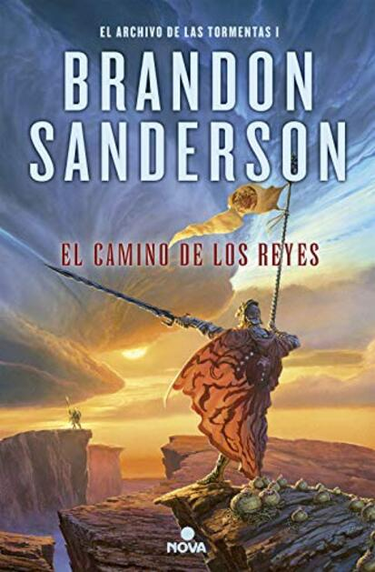

Aventuras
La isla del tesoro
Robert Louis Stevenson

La vuelta al mundo
Julio Verne
Moby Dick
Herman Melville

La isla del tesoro
Robert Louis Stevenson
Ficcion
El Ángel de la Ciudad
Eva García Sáenz de Urturi
Historias de mujeres casadas
Cristina Campos
Dune
Frank Herbert
La isla del tesoro
Robert Louis Stevenson
Romance
Bajo la misma estrella
John Green
Un cuento perfecto
Elísabet Benavent
Nosotros en la luna
Alice Kellen
La isla del tesoro
Robert Louis Stevenson
Fantasia
El camino de los reyes
Brandon Sanderson

El imperio final
Brandon Sanderson
El nombre del viento
Patrick Rothfuss
La isla del tesoro
Robert Louis Stevenson